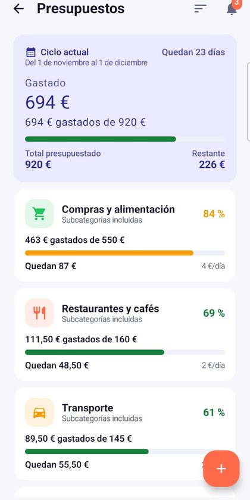
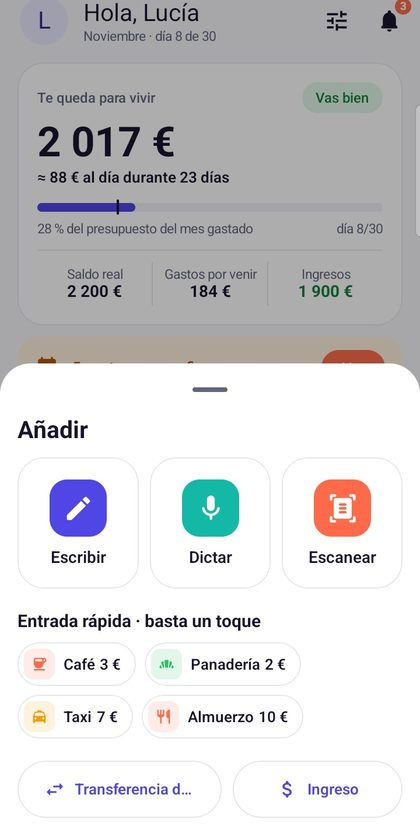
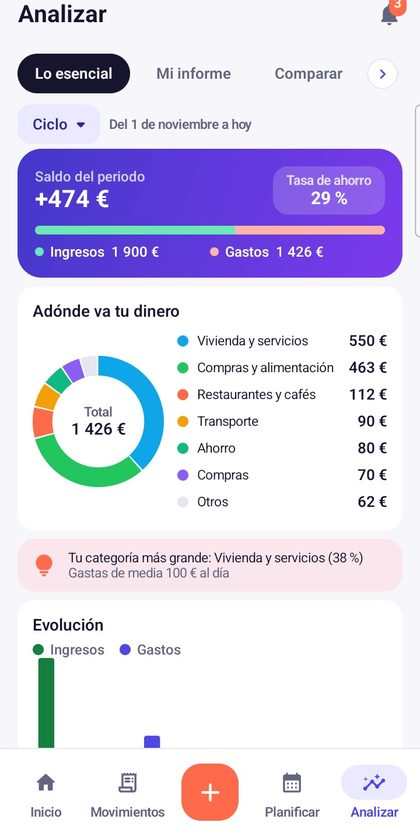

El presupuesto que sigue tu sueldo.
Walletz calcula cuánto te queda hasta el próximo cobro, confirma tus gastos fijos con un toque y registra tus gastos en segundos: por voz, con foto o con el teclado.
Descargar en Google PlayDescubrir las funciones- Sin crear cuenta
- Modo oscuro
- 6 idiomas
- Copia en Google Drive


Todo lo que necesitas para llegar a fin de mes
Pensada para quien cuenta cada euro, dírham o dólar: clara, rápida y sin jerga bancaria.
Un saldo disponible real
Tu ciclo empieza cuando llega tu sueldo, no el día 1. Walletz te muestra lo que queda tras los gastos fijos y tu presupuesto diario.
Registro en 3 segundos
Di «12 euros café en efectivo» o fotografía el ticket: el total se lee en tu teléfono. O escribe con el teclado.
Tus cuentas, a tu estilo
Banco, efectivo, ahorro: elige color y logo para cada cuenta y añade fotos a las categorías. Todo se reconoce de un vistazo.
Gastos fijos, deudas y tandas
Alquiler, cuotas, suscripciones, tanda: avisos antes del vencimiento, confirmación con un toque y seguimiento de lo que falta por pagar.
Presupuestos, metas, compras
Fija un tope por categoría, avanza hacia tus metas de ahorro y prepara tu lista de la compra con precios.
Copia en Google Drive
Opcional: una copia de tus datos en el espacio privado de la app en tu propio Drive, para no perder nada al cambiar de teléfono.
Un presupuesto claro a primera vista


Listo en tres minutos
Indica tu sueldo y tu día de cobro
Walletz abre tu ciclo en el momento justo y prepara categorías en tu idioma.
Añade tus cuentas y gastos fijos
Banco, efectivo, alquiler, suscripciones: una sola vez y todo queda previsto.
Registra tus gastos sobre la marcha
Por voz, foto o teclado. Tu saldo disponible se actualiza solo.
Tus datos se quedan contigo
Sin cuenta de Walletz y sin servidor: tus movimientos se guardan en tu teléfono. Si activas la copia en Google Drive, se envía al espacio privado de la app en tu propia cuenta, que no podemos leer. Walletz es gratis gracias a una publicidad discreta que tus puntos de fidelidad permiten quitar.
¿Tienes alguna pregunta?
Consulta la ayuda o escríbenos a learntique@gmail.com. Respondemos en 48 horas laborables.